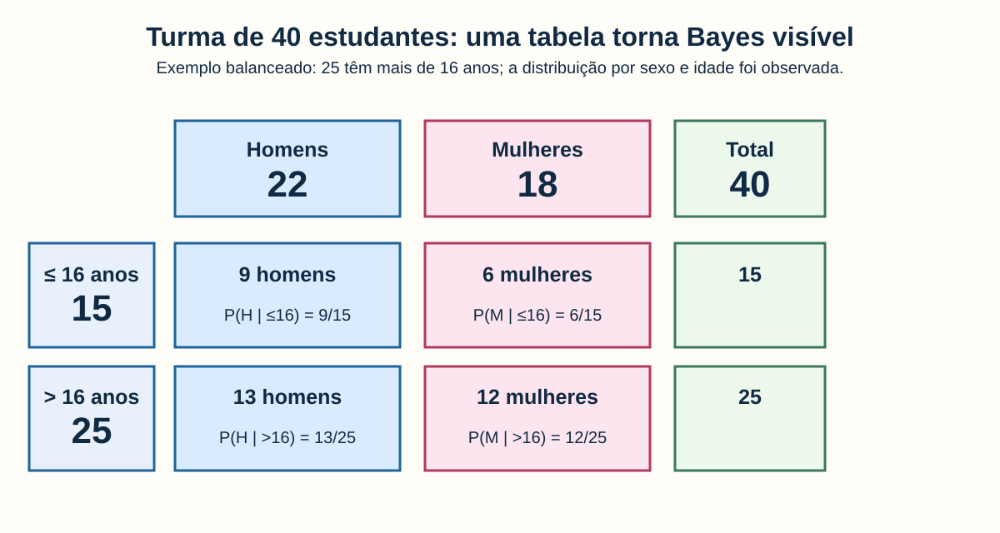
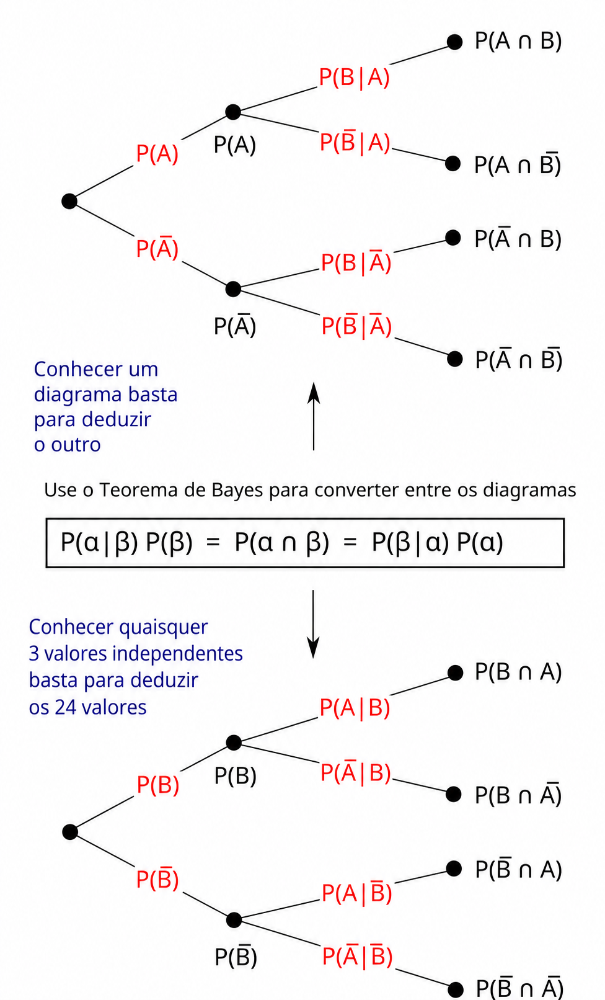
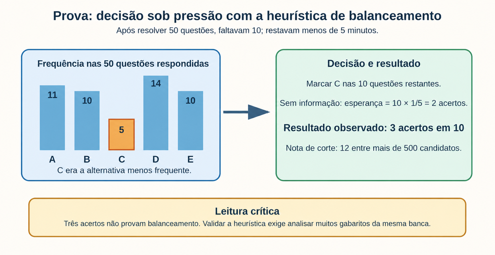

Objetivos
Ao final desta aula, você deverá ser capaz de:
- Interpretar probabilidade condicional como uma mudança do conjunto de referência.
- Aplicar o teorema de Bayes em uma tabela de contingência.
- Distinguir probabilidade conjunta de probabilidade condicional.
- Explicar inferência bayesiana como atualização de crenças à luz de evidências.
- Comparar a perspectiva bayesiana com a estatística frequentista.
- Avaliar criticamente uma heurística usada sob pressão de tempo.
- Reconhecer aplicações em busca marítima, previsão do tempo e estudos climáticos.
Problema de Pesquisa
Quando recebemos uma nova informação, devemos manter a mesma probabilidade que atribuíamos antes ou atualizar nossa avaliação?
Essa pergunta aparece em jogos, diagnósticos, decisões de prova, previsão de chuva e busca de destroços no oceano. A ideia central da aula é:
uma evidência não precisa dar certeza para mudar racionalmente o que consideramos mais provável.
Motivação: o problema de Monty Hall
Imagine um programa com três portas. Atrás de uma há um carro; atrás das outras duas há bodes. Você escolhe uma porta. O apresentador, que sabe onde está o carro, abre uma das duas portas não escolhidas e sempre revela um bode. Então pergunta: você quer trocar de porta?

Antes de qualquer porta ser aberta, sua escolha tem probabilidade \(1/3\) de conter o carro. As outras duas portas, juntas, têm probabilidade \(2/3\).
O apresentador não abre uma porta ao acaso. Para que o problema tenha a resposta clássica, três regras são necessárias:
- ele sabe onde está o carro;
- ele sempre abre uma porta que tem um bode;
- ele sempre oferece a possibilidade de troca.
Portanto, a abertura é uma informação produzida por uma regra. O apresentador elimina deliberadamente uma alternativa errada; ele não redistribui as probabilidades como se o jogo recomeçasse. Assim, os \(2/3\) que estavam nas duas portas não escolhidas passam a ficar concentrados na única porta fechada que restou.
Comparação das estratégias:
- Manter a primeira porta: probabilidade de ganhar \(1/3\).
- Trocar de porta: probabilidade de ganhar \(2/3\).
Portanto, a melhor estratégia é trocar. O problema evidencia que a afirmação “agora há duas portas, então é 50% para cada uma” ignora como a informação foi produzida.
Por que trocar funciona?
Podemos separar todas as possibilidades em dois grupos:
- Você escolhe o carro logo no início: isso ocorre em \(1/3\) dos jogos. O apresentador abre um bode e, se você trocar, perde.
- Você escolhe um bode logo no início: isso ocorre em \(2/3\) dos jogos. O apresentador é obrigado a abrir o outro bode; a porta restante contém o carro e, se você trocar, ganha.
Logo, trocar vence nos mesmos \(2/3\) dos casos em que a primeira escolha estava errada. A probabilidade condicional relevante é: depois de o apresentador, seguindo essas regras, abrir uma porta com bode, qual porta concentra a chance que originalmente estava nas duas portas não escolhidas? A resposta é a porta fechada que restou.
O resultado parece contraintuitivo porque é comum perceber apenas “duas portas fechadas” e tratá-las como simétricas. Elas não são: a primeira porta foi escolhida sem informação; a segunda sobreviveu a uma eliminação informada. Uma forma de tornar isso mais visível é imaginar 100 portas. Você escolhe uma (\(1/100\)); o apresentador abre 98 portas com bodes e deixa apenas a sua e outra fechadas. A vontade de trocar para a porta que o apresentador preservou fica muito mais evidente: ela concentra \(99/100\) da chance inicial.
O problema aparece em uma cena de aula do filme Quebrando a Banca (21, 2008), em que o professor Micky Rosa desafia Ben Campbell com as três portas. A cena é uma boa ponte entre cultura popular e raciocínio probabilístico, mas a solução depende das regras acima (IMDB, 2026).
As regras do apresentador são indispensáveis. Se ele escolhesse uma porta ao acaso — podendo, inclusive, revelar o carro — a informação observada teria outro significado e a conclusão de \(2/3\) para a troca não poderia ser aplicada automaticamente.
Probabilidade condicional e o Teorema de Bayes
Considere dois eventos \(A\) e \(B\). A probabilidade condicional de \(A\) dado que \(B\) ocorreu é (ROSS, 2014):
\[ P(A\mid B)=\frac{P(A\cap B)}{P(B)}, \qquad P(B)>0. \]
Lemos \(P(A\mid B)\) como “probabilidade de \(A\), dado \(B\)”. O termo “dado” muda o universo que estamos observando: deixamos de olhar toda a população e passamos a olhar apenas os casos em que \(B\) ocorreu.
Como \(P(A\cap B)=P(A\mid B)P(B)\) e também \(P(A\cap B)=P(B\mid A)P(A)\), obtemos o teorema de Bayes:
\[ \boxed{P(A\mid B)=\frac{P(B\mid A)P(A)}{P(B)}}. \]
Em palavras:
\[ \text{posterior} = \frac{\text{verossimilhança}\times\text{prior}}{\text{evidência}}. \]
- Prior: o que era plausível antes de observar a nova evidência;
- verossimilhança: quão compatível a evidência é com uma hipótese;
- evidência: probabilidade total de observar o dado;
- posterior: avaliação após considerar o dado.
Exemplo: uma turma com 40 estudantes
Considere uma turma de 40 estudantes: 22 homens e 18 mulheres. O levantamento observou a distribuição conjunta entre sexo e idade: 9 homens e 6 mulheres têm até 16 anos; 13 homens e 12 mulheres têm mais de 16 anos.
A tabela abaixo organiza esses dados. Os totais marginais, por si só, não permitiriam determinar essa distribuição entre os grupos; para responder a perguntas condicionais, precisamos da informação conjunta observada. Esse é um ponto crucial: Bayes não cria informação que não foi observada.

Duas perguntas diferentes
É importante separar as perguntas:
- Qual a probabilidade de selecionar, na turma inteira, um homem de até 16 anos?
- Sabendo que o estudante selecionado tem até 16 anos, qual é a probabilidade de ser homem?
A primeira é uma probabilidade conjunta:
\[ P(H\cap {\leq16})=\frac{9}{40}=0{,}225=22{,}5\%. \]
A segunda é uma probabilidade condicional. Intuitivamente, agora só olhamos os 15 estudantes de até 16 anos; 9 deles são homens:
\[ P(H\mid {\leq16})=\frac{9}{15}=60\%. \]
Pelo teorema de Bayes, chegamos ao mesmo resultado:
\[ P(H\mid {\leq16})= \frac{P({\leq16}\mid H)P(H)}{P({\leq16})} =\frac{\left(\frac{9}{22}\right)\left(\frac{22}{40}\right)}{\frac{15}{40}} =\frac{9}{15}. \]
Agora a pergunta análoga para mulheres com mais de 16 anos. Na turma, há 25 estudantes nessa faixa; 12 deles são mulheres.
Probabilidade conjunta:
\[ P(M\cap {>16})=\frac{12}{40}=30\%. \]
Probabilidade condicional:
\[ P(M\mid {>16})=\frac{12}{25}=48\%. \]
Pelo teorema de Bayes:
\[ P(M\mid {>16})= \frac{P({>16}\mid M)P(M)}{P({>16})} =\frac{\left(\frac{12}{18}\right)\left(\frac{18}{40}\right)}{\frac{25}{40}} =\frac{12}{25}. \]

O que é inferência bayesiana?
Inferência bayesiana é um modo de raciocinar e modelar incerteza no qual começamos com uma distribuição de probabilidades para hipóteses ou parâmetros, observamos dados e atualizamos essa distribuição pelo teorema de Bayes (GELMAN et al., 2013).
Não se trata de “acreditar em qualquer coisa”. O prior deve ser declarado e justificado por conhecimento anterior, dados históricos, especialistas ou uma escolha deliberadamente pouco informativa. A evidência nova pode reforçar, enfraquecer ou alterar muito essa avaliação.
O fluxo geral é:
- Formular hipóteses e uma crença prévia.
- Modelar quais dados seriam esperados sob cada hipótese.
- Observar os dados.
- Calcular ou aproximar a distribuição posterior.
- Tomar uma decisão considerando probabilidades e consequências.
Bayesiano e frequentista: diferença principal
As duas abordagens usam dados, modelos e probabilidade. A diferença central é como interpretam a incerteza sobre um parâmetro desconhecido.
Comparação em quatro pontos:
- Parâmetro desconhecido: para a perspectiva bayesiana, pode ser representado por uma distribuição de probabilidade; para a frequentista, é fixo, embora desconhecido.
- Probabilidade: para a perspectiva bayesiana, é um grau de incerteza coerente com a informação disponível; para a frequentista, está ligada à frequência relativa em repetições hipotéticas.
- Informação anterior: na abordagem bayesiana, pode entrar explicitamente como prior; na frequentista, em geral a inferência é baseada no procedimento amostral e nos dados atuais.
- Resultado típico: Bayes produz uma distribuição posterior e intervalo de credibilidade; a abordagem frequentista trabalha com estimativa pontual, intervalo de confiança e teste de hipótese.
Um intervalo de credibilidade de 95% pode ser lido, dado o modelo e o prior, como uma faixa que contém o parâmetro com probabilidade posterior de 95%. Já um intervalo de confiança de 95% descreve o desempenho de longo prazo de um procedimento de construção de intervalos; não é, na interpretação frequentista clássica, uma probabilidade sobre o parâmetro fixo (WASSERMAN, 2004).
Relato pessoal: decisão sob pressão em uma prova
Em uma prova de concurso com 60 questões para resolver em cinco horas, faltavam pouco menos de cinco minutos quando eu terminei a questão 50. Restavam 10 questões numéricas, e eu não tinha tempo sequer para ler os enunciados.
Nas 50 questões que eu havia respondido, as frequências eram: A = 11, B = 10, C = 5, D = 14 e E = 10. Adotei uma heurística de balanceamento: como C era a alternativa menos frequente, marquei C nas dez questões restantes. Acertei 3 das 10. Esse acerto adicional contribuiu para que eu alcançasse a nota de corte; entre mais de 500 candidatos, apenas 12 a atingiram, e eu fui um deles.

Leitura probabilística do relato
Se cada questão tivesse cinco alternativas e não houvesse nenhuma informação útil, o modelo de chute seria:
\[ P(\text{acerto})=\frac{1}{5}=20\%. \]
Em 10 questões, o número esperado de acertos seria \(10\times 0{,}20=2\). Obter 3 acertos corresponde a 30%, acima desse valor esperado. Mesmo assim, três acertos não são um resultado raríssimo sob o modelo de chute: se \(X\sim\operatorname{Binomial}(10,0{,}2)\), então \(P(X=3)\approx20{,}1\%\). Essa conta ajuda a não confundir “acima do esperado” com “prova de uma estratégia”.
Mas é essencial interpretar isso corretamente:
- 3 acertos em 10 não provam que a banca balanceou as alternativas;
- uma sequência curta varia naturalmente: 3 acertos ainda é compatível com chutes aleatórios;
- a estratégia só se aproxima de uma decisão bayesiana se a crença sobre balanceamento vier de evidência anterior verificável — por exemplo, análise de muitas provas da mesma banca;
- o resultado não demonstra causalmente que a heurística produziu a aprovação; ele mostra que, naquela decisão urgente, a estratégia foi útil e o ponto extra teve grande consequência pessoal.
Uma análise bayesiana mais completa compararia hipóteses, por exemplo \(B\): “a banca tende a balancear alternativas” e \(\bar B\): “não há tendência de balanceamento”. Dados históricos de gabaritos atualizariam \(P(B)\) para \(P(B\mid D)\). Então a escolha da letra consideraria essa posterior, não apenas uma impressão.
O relato evidencia a diferença entre heurística e inferência formal: uma heurística pode ser útil e prática em uma decisão urgente, mas precisa ser testada antes de ser generalizada.
Aplicações da inferência bayesiana
Busca bayesiana no mar
Em uma busca por destroços no oceano, não é possível varrer todo o mar com o mesmo esforço. A teoria de busca bayesiana combina informações como última posição conhecida, rota, correntes, vento, deriva de objetos e áreas já examinadas (STONE, 1989).
O resultado é um mapa de probabilidade: regiões mais prováveis recebem prioridade. Quando uma área é procurada sem resultado, isso não significa necessariamente que o objeto não está ali, pois a busca pode ter detecção imperfeita. A probabilidade é atualizada considerando também a chance de a equipe ter encontrado o objeto caso ele estivesse naquela área.
Em termos simplificados, para uma célula de busca \(i\):
\[ P(i\mid \text{não encontrado}) \propto P(\text{não encontrado}\mid i)P(i). \]

O voo Malaysia Airlines MH370 desapareceu em 8 de março de 2014, durante a rota entre Kuala Lumpur e Pequim, com 239 pessoas a bordo. Depois da última detecção por radar, os registros automáticos de comunicação via satélite indicaram que a aeronave continuou voando por aproximadamente cinco horas e meia. Como esses registros não forneciam uma posição direta, a área possível no sul do Oceano Índico era enorme e exigia uma forma explícita de decidir onde procurar primeiro (ATSB, 2017).
Esse contexto torna o caso particularmente importante para a busca bayesiana. A análise começou com uma distribuição de probabilidades para possíveis trajetórias, combinando dados de radar, horários e frequências das comunicações por satélite, desempenho do Boeing 777, condições meteorológicas e hipóteses sobre o voo final. O resultado não foi um ponto exato no mapa, mas uma distribuição: algumas faixas do chamado “sétimo arco” eram mais prováveis que outras. Essa distribuição orientava a prioridade de navios e sonar, em vez de tratar toda a região como igualmente provável (ATSB, 2017).
Cada nova evidência podia atualizar o mapa. Modelos de deriva de destroços ajudavam a revisar as regiões plausíveis; uma área examinada por sonar com alta probabilidade de detecção reduzia a chance de o avião estar ali e deslocava a atenção para alternativas ainda não verificadas. Portanto, um resultado negativo não é “nenhuma informação”: seu valor depende de quão bem a área foi coberta e de quão capaz era o instrumento de detectar os destroços. A busca australiana ilustra esse processo: as áreas de maior probabilidade foram priorizadas e, quando investigadas com confiança sem localizar a aeronave, a distribuição de probabilidade foi reavaliada.
O caso também mostra os limites do método. Uma atualização bayesiana organiza evidências incompletas e ajuda a distribuir recursos escassos, mas não transforma incerteza em certeza. A busca submarina conduzida até janeiro de 2017 cobriu mais de 120 mil km²; operações posteriores elevaram a área total examinada para perto de 200 mil km², sem localizar os destroços principais. Assim, o MH370 é uma referência tanto pelo uso rigoroso de probabilidades quanto pela lição de que modelos dependem da qualidade dos dados, das hipóteses adotadas e da capacidade real de observação (ATSB, 2017).
O AF447: um precedente decisivo
O voo Air France 447 desapareceu em 1º de junho de 2009 durante a rota Rio de Janeiro–Paris, com 228 pessoas a bordo. Os primeiros destroços foram encontrados no Atlântico, mas a localização do impacto e dos gravadores de voo permaneceu desconhecida. Três campanhas submarinas iniciais não localizaram os destroços; para planejar a fase seguinte, o órgão francês de investigação, o BEA, encomendou uma análise específica da área provável do acidente (STONE et al., 2014).

O trabalho incorporou a última posição conhecida, a trajetória estimada, os locais onde destroços haviam sido encontrados e, sobretudo, o que as buscas anteriores não haviam detectado. Esse último ponto é o coração da busca bayesiana: uma varredura sem resultado reduz a probabilidade de o alvo estar em uma região somente na medida em que o sensor, a cobertura e as condições ambientais teriam permitido detectá-lo. A análise produziu uma distribuição posterior para os destroços e orientou a quarta campanha de busca submarina.
Em 2 de abril de 2011, os destroços principais foram localizados a cerca de 3.900 metros de profundidade e aproximadamente 6,5 milhas náuticas ao norte da última posição conhecida. O AF447 é, portanto, um contraste instrutivo com o MH370: em ambos, probabilidades ajudaram a priorizar áreas enormes e a interpretar buscas negativas; no AF447, a atualização baseada nas evidências disponíveis levou a uma área onde os destroços foram efetivamente encontrados. O caso não prova que Bayes garante sucesso, mas evidencia como um modelo explícito de incerteza e de detecção pode tornar uma busca muito mais informada (BEA, 2012; STONE et al., 2014).
Tempo: previsão como distribuição, não como certeza
Uma previsão de 70% de chuva não significa “vai chover em 70% da cidade” nem “choverá durante 70% do dia”. Em uma interpretação operacional simplificada, ela expressa uma probabilidade para ocorrência mensurável de chuva em um local/período, condicionada a dados e modelos.
Modelos numéricos fornecem previsões a partir de leis físicas; observações de satélite, radar, estações e radiossondas atualizam o estado estimado da atmosfera. Métodos bayesianos podem combinar previsões de conjuntos de modelos e observações, produzindo uma distribuição para temperatura, vento ou precipitação (GNEITING; RAFTERY, 2005).
Por exemplo, se o radar não detecta chuva em uma região, a probabilidade de chuva deve ser atualizada. A magnitude dessa atualização depende tanto da previsão inicial quanto da capacidade do radar de detectar chuva.
Mudanças climáticas: incerteza quantificada
Em estudos climáticos, a inferência bayesiana pode combinar observações históricas, conhecimento físico, modelos climáticos e cenários de emissões para estimar parâmetros e intervalos de incerteza. Ela é útil, por exemplo, para projetar extremos de temperatura ou precipitação e para combinar conjuntos de modelos (MET OFFICE, 2020).

Probabilidade, nesse contexto, não é ausência de ciência. Ela comunica o que sabemos, o que ainda não sabemos e como diferentes evidências modificam projeções. A base física — balanço de energia, dinâmica dos fluidos, química atmosférica — continua essencial.
Síntese
O teorema de Bayes relaciona probabilidades condicionais. A inferência bayesiana transforma essa relação em um método geral: começamos com informação anterior, incorporamos evidências e obtemos uma distribuição posterior.
O problema de Monty Hall mostra que informação relevante pode mudar uma decisão. A turma mostra que é necessário conhecer a distribuição conjunta para responder perguntas condicionais. A prova ilustra uma decisão sob pressão, mas também a necessidade de distinguir uma boa história pessoal de uma evidência estatística forte. Nas buscas, no tempo e no clima, Bayes ajuda a distribuir incerteza e recursos de modo explícito.
Imagens de Uso Livre
- Portas de Monty Hall, Cepheus, domínio público: https://commons.wikimedia.org/wiki/File:Monty_open_door.svg.
- Visualização geométrica de Bayes, Cmglee, CC BY-SA 3.0: https://commons.wikimedia.org/wiki/File:Bayes_theorem_visualisation.svg.
- Diagramas em árvore de Bayes, Gnathan87, CC0; tradução para o português baseada no original: https://commons.wikimedia.org/wiki/File:Bayes_theorem_tree_diagrams.svg.
- Mapa da busca do MH370, Andrew Heneen, CC BY 3.0: https://commons.wikimedia.org/wiki/File:MH370_SIO_search.png.
- Visualização climática, Oak Ridge National Laboratory, domínio público: https://commons.wikimedia.org/wiki/File:Climate_visualization.jpg.
- Mapa da área inicial de busca do AF447, Jérôme/Força Aérea Brasileira, CC BY 2.5 BR: https://commons.wikimedia.org/wiki/File:Rota_AirFrance_447_fr-2009-19-07.svg.
- Diagramas da turma e da decisão na prova: elaboração própria.
{kind=link}
{kind=link}
{kind=link}
{kind=link}
{kind=link}
{kind=link}
Vídeos Recomendados
O vídeo do 3Blue1Brown apresenta uma explicação visual e intuitiva do teorema de Bayes. É recomendado após o exemplo da turma, quando os termos prior, evidência e posterior já foram introduzidos.
O vídeo da NASA ajuda a retomar a diferença entre variabilidade de curto prazo e tendências de longo prazo, preparando a discussão sobre incertezas nas projeções climáticas.
Outras indicações:
- 3Blue1Brown, coleção de probabilidade: https://www.3blue1brown.com/topics/probability.
- NOAA Climate.gov, vídeos de clima: https://www.climate.gov/news-features/videos.
- US Coast Guard, material histórico sobre teoria de busca: https://www.uscg.mil/Resources/Library/Collections/Coast-Guard-History/.
Questões de revisão e reflexão
- Por que trocar de porta no problema de Monty Hall aumenta a probabilidade de ganhar?
- Qual é a diferença entre \(P(H\cap {\leq16})\) e \(P(H\mid {\leq16})\)?
- Por que os totais marginais da turma não bastam para obter a tabela cruzada?
- O que representam prior, verossimilhança e posterior?
- Qual é a principal diferença entre intervalo de credibilidade e intervalo de confiança?
- A estratégia da prova foi inferência bayesiana formal, heurística ou ambos? Justifique.
- Por que três acertos em dez questões não demonstram, por si só, que a banca balanceia alternativas?
- Como uma busca sem resultado atualiza um mapa de probabilidades no mar? Compare os casos AF447 e MH370.
- O que pode significar uma previsão de 70% de chuva?
- Por que comunicar incerteza é importante em projeções climáticas?
Referências
AUSTRALIAN TRANSPORT SAFETY BUREAU (ATSB). The operational search for MH370. Canberra, 2017. Disponível em: https://www.atsb.gov.au/sites/default/files/media/5773565/operational-search-for-mh370_final_3oct2017.pdf. Acesso em: 2 set. 2026.
BUREAU D’ENQUÊTES ET D’ANALYSES POUR LA SÉCURITÉ DE L’AVIATION CIVILE (BEA). Accident to the Airbus A330 registered F-GZCP operated by Air France on 1 June 2009 in the Atlantic Ocean. Le Bourget, 2012. Disponível em: https://bea.aero/en/investigation-reports/notified-events/detail/accident-to-the-airbus-a330-203-registered-f-gzcp-and-operated-by-air-france-occured-on-06-01-2009-in-the-atlantic-ocean. Acesso em: 2 set. 2026.
GELMAN, Andrew et al. Bayesian data analysis. 3. ed. Boca Raton: CRC Press, 2013.
GNEITING, Tilmann; RAFTERY, Adrian E. Weather forecasting with ensemble methods. Science, Washington, DC, v. 310, n. 5746, p. 248-249, 2005. DOI: 10.1126/science.1115255.
MET OFFICE. UKCP18 factsheet: probabilistic projections. Exeter, 2020. Disponível em: https://www.metoffice.gov.uk/research/approach/collaboration/ukcp/index. Acesso em: 2 set. 2026.
ROSS, Sheldon M. A first course in probability. 9. ed. Boston: Pearson, 2014.
STONE, Lawrence D. Theory of optimal search. 2. ed. Arlington: Military Operations Research Society, 1989.
STONE, Lawrence D.; KELLER, Colleen M.; KRATZKE, Thomas M.; STRUMPFER, Johan P. Search for the wreckage of Air France Flight AF 447. Statistical Science, v. 29, n. 1, p. 69-80, 2014. DOI: 10.1214/13-STS420.
WASSERMAN, Larry. All of statistics: a concise course in statistical inference. New York: Springer, 2004.
WIKIMEDIA COMMONS. Bayes theorem tree diagrams.svg. Disponível em: https://commons.wikimedia.org/wiki/File:Bayes_theorem_tree_diagrams.svg. Acesso em: 2 set. 2026.
WIKIMEDIA COMMONS. Bayes theorem visualisation.svg. Disponível em: https://commons.wikimedia.org/wiki/File:Bayes_theorem_visualisation.svg. Acesso em: 2 set. 2026.
WIKIMEDIA COMMONS. Climate visualization.jpg. Disponível em: https://commons.wikimedia.org/wiki/File:Climate_visualization.jpg. Acesso em: 2 set. 2026.
WIKIMEDIA COMMONS. MH370 SIO search.png. Disponível em: https://commons.wikimedia.org/wiki/File:MH370_SIO_search.png. Acesso em: 2 set. 2026.
WIKIMEDIA COMMONS. Monty open door.svg. Disponível em: https://commons.wikimedia.org/wiki/File:Monty_open_door.svg. Acesso em: 2 set. 2026.
IMDB. Quebrando a Banca (21): curiosidades. 2026. Disponível em: https://www.imdb.com/pt/title/tt0478087/trivia/. Acesso em: 2 set. 2026.